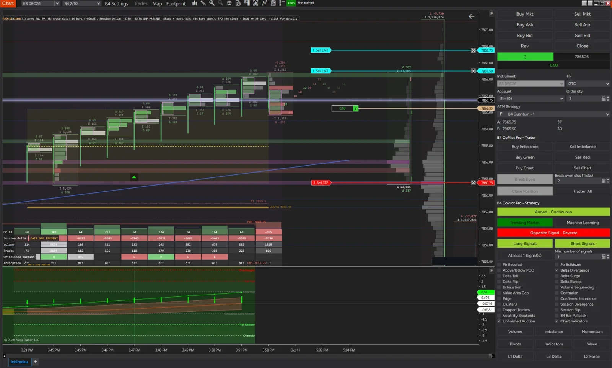
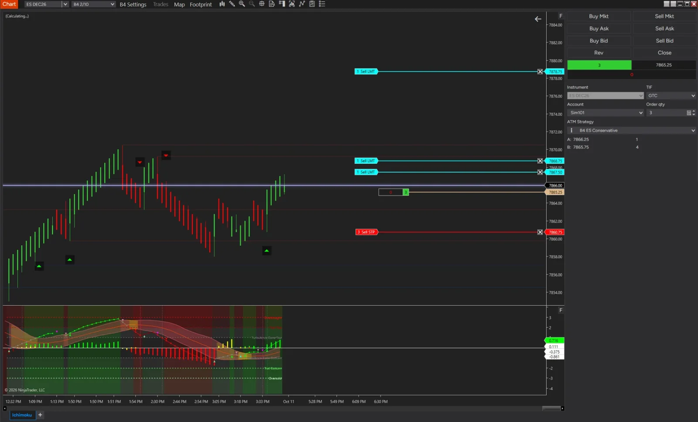
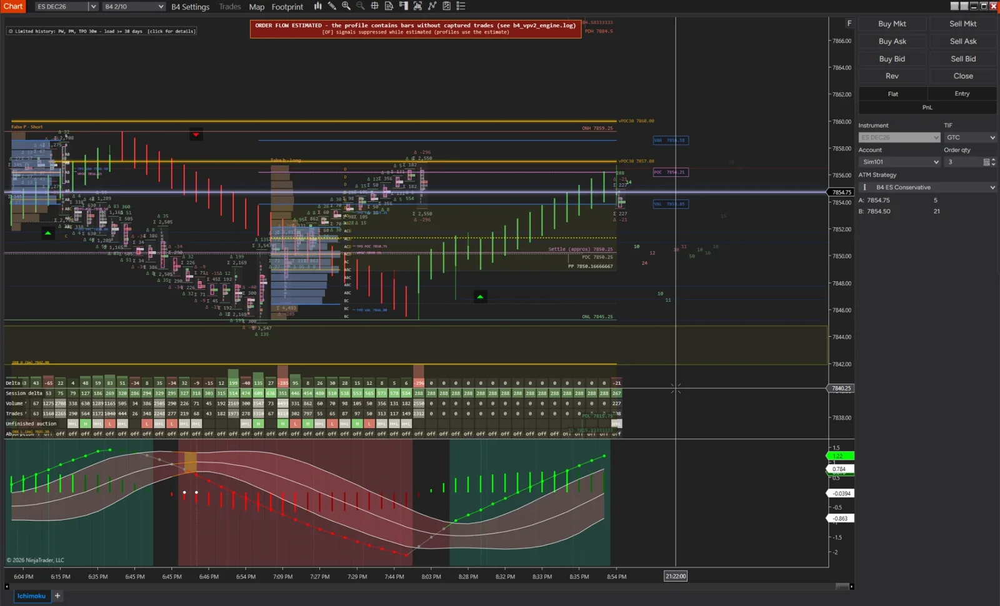

Configurable Trade Assistance. Intelligent Order Flow. Integrated Indicator Signals.
B4 CoPilot Pro is the strategy execution engine of the B4 Signals ecosystem for NinjaTrader 8: a configurable trade-assistance and order-flow workflow engine. It brings together supported order-flow signals, market-condition filters, trend analysis, indicator-generated signals, and trade-management controls to help traders configure and evaluate trading workflows around their own rules.
Through B4 API integration, CoPilot Pro can consume supported indicator signals exposed through the API, allowing compatible indicators to contribute their signals and confirmation information to the broader trading workflow. This creates an extensible framework for integrating indicator-based analysis without requiring every signal source to be a native CoPilot Pro indicator.
Core Capabilities
- B4 API Indicator Integration: Connects compatible indicator signals exposed through the B4 API to supported CoPilot Pro workflows, enabling indicator-generated signals to contribute to analysis and trade-condition evaluation.
- Extensible Signal Sources: Supports integration with multiple compatible indicator signal providers, subject to API compatibility, signal definitions, and the approved implementation.
- Configurable Order-Flow Analysis: Combines supported buying and selling pressure, delta, footprint, and market-depth information to help evaluate developing market conditions.
- Multi-Signal Confirmation: Allows supported signals and filters to be combined according to configured conditions before a workflow responds.
- Trend and Market-Regime Analysis: Supports evaluation of directional trends and changing market conditions using the CoPilot Pro feature set.
- Signal Filtering: Uses compatible analytical filters to evaluate whether incoming signals meet the configured requirements.
- Trade-Management Integration: Supports approved trade-management workflows and controls within NinjaTrader 8.
- B4 Ecosystem Compatibility: Connects CoPilot Pro with compatible B4 analytical tools and signal sources, through the B4 API.
An Extensible Indicator-Signal Framework
B4 CoPilot Pro is designed to bring compatible indicator signals into a configurable trading workflow. With B4 API integration, the system can use signals exposed by supported indicators as inputs for analysis, confirmation, and other approved workflow actions.
This approach creates a common integration path for indicator signals while preserving the distinction between generating a signal, evaluating its conditions, and authorizing an execution action.
API availability alone does not mean every indicator is automatically compatible. Each integration must expose the required signal data and conform to the supported API contract.
B4 CoPilot Pro — Connect indicator signals. Configure confirmation. Build a more integrated trading workflow.
For educational purposes only. Not trading advice. Trading involves substantial risk. Indicator signals, filters, and automated or assisted workflows do not guarantee profitable results.
See it in NinjaTrader 8



Screenshots from NinjaTrader 8 on a simulation account (Sim101).